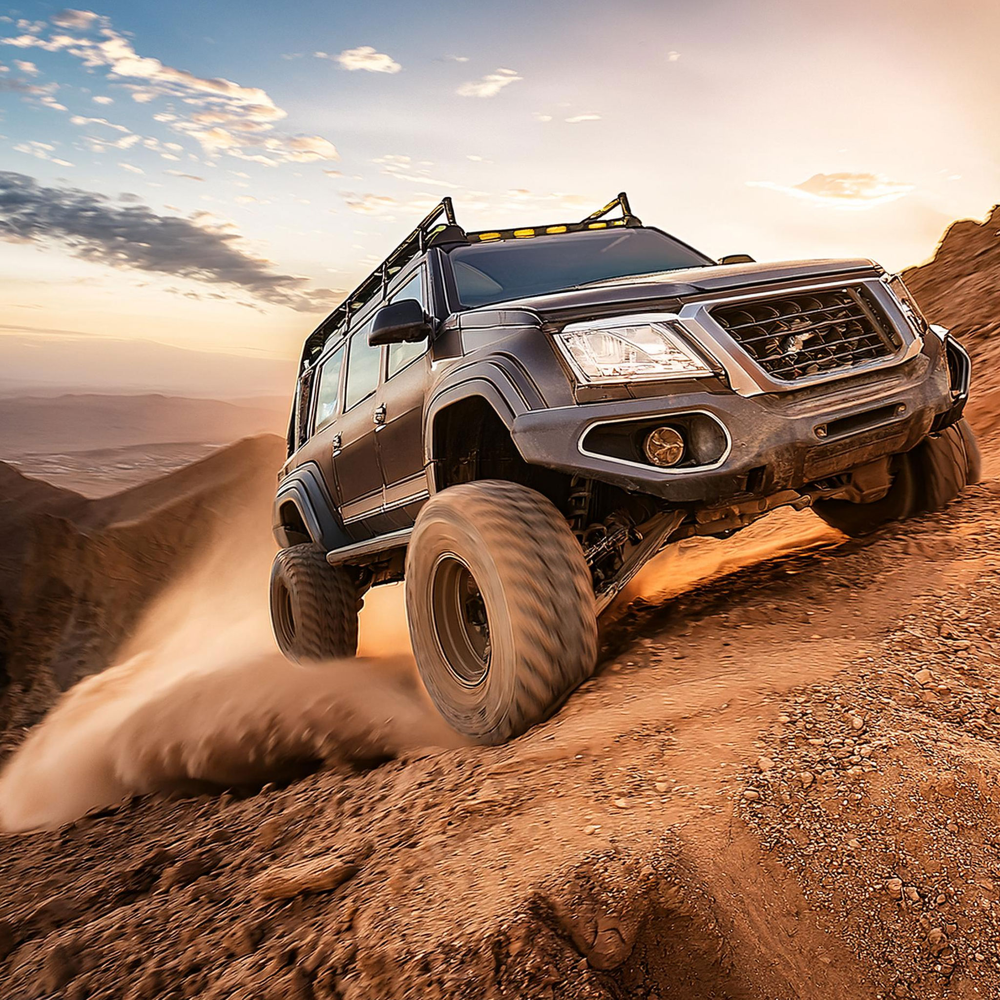
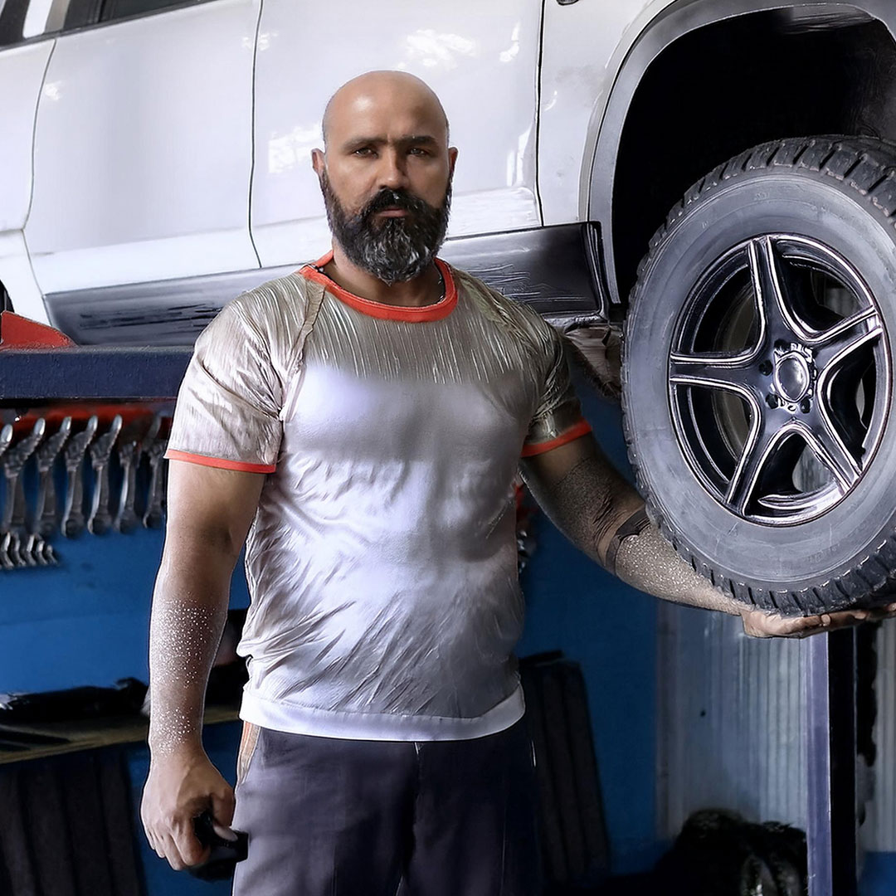
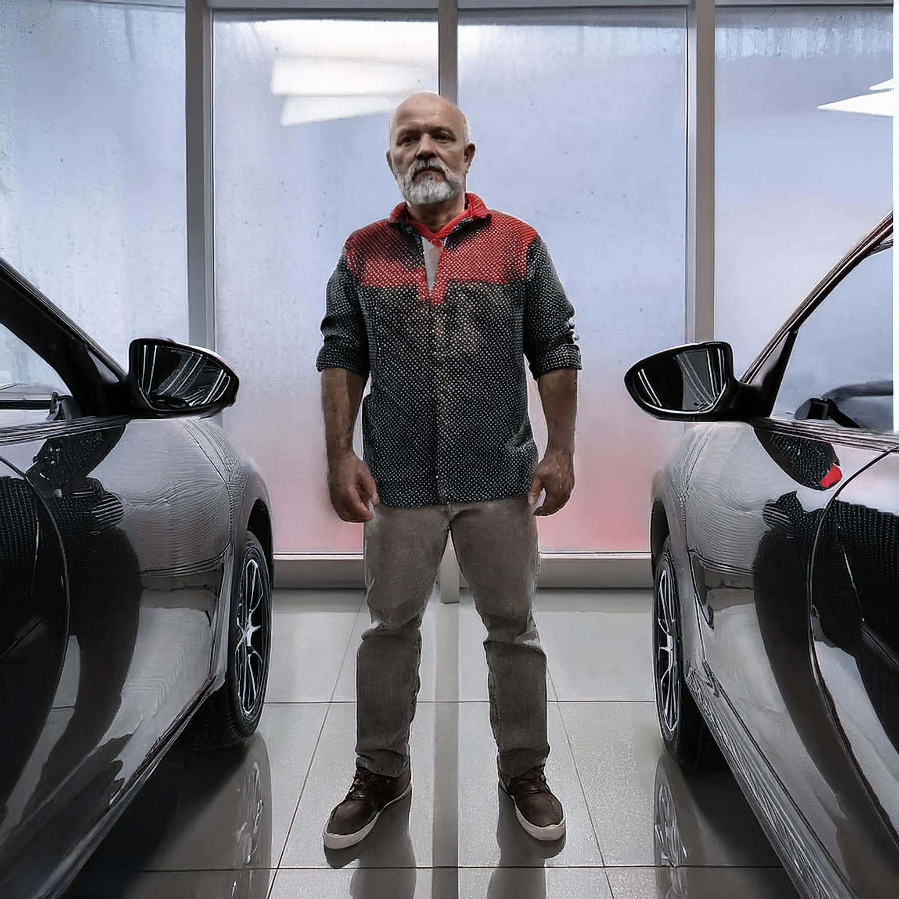
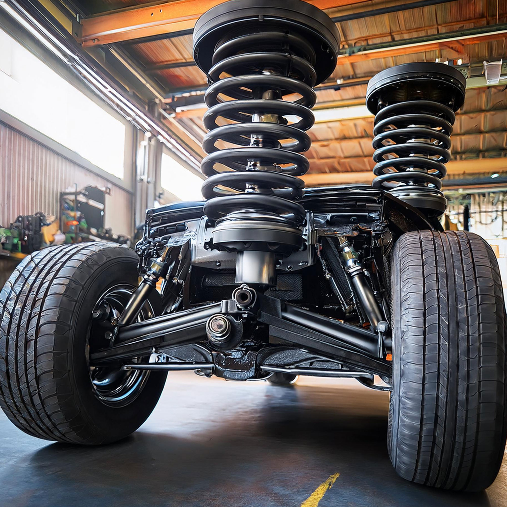
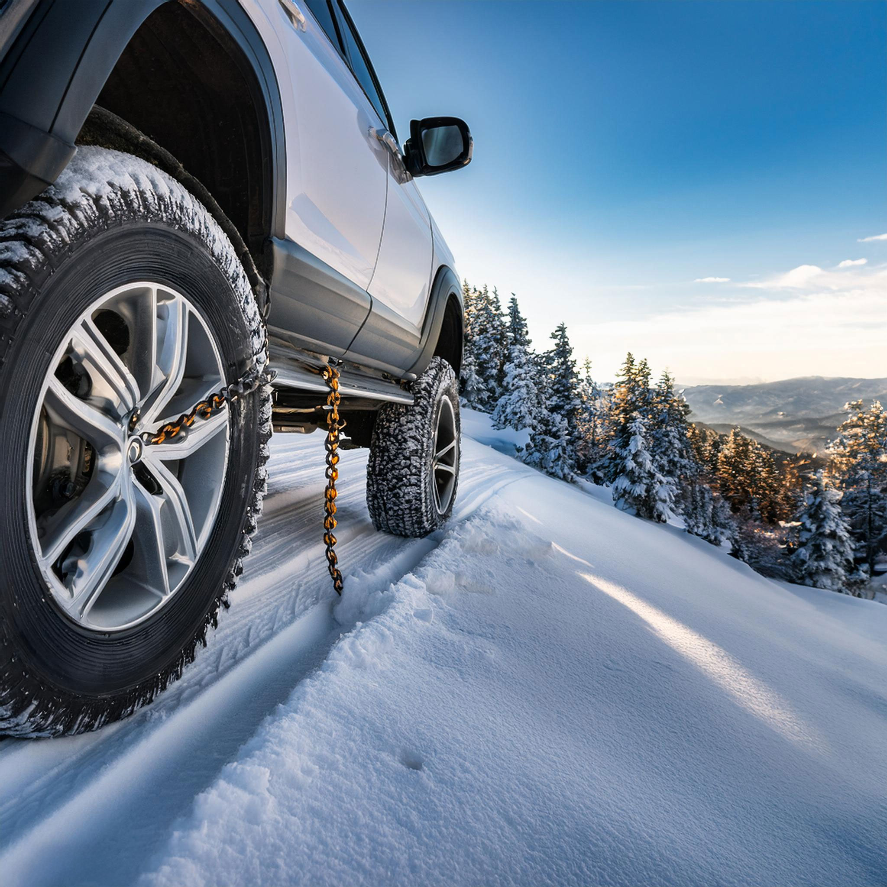
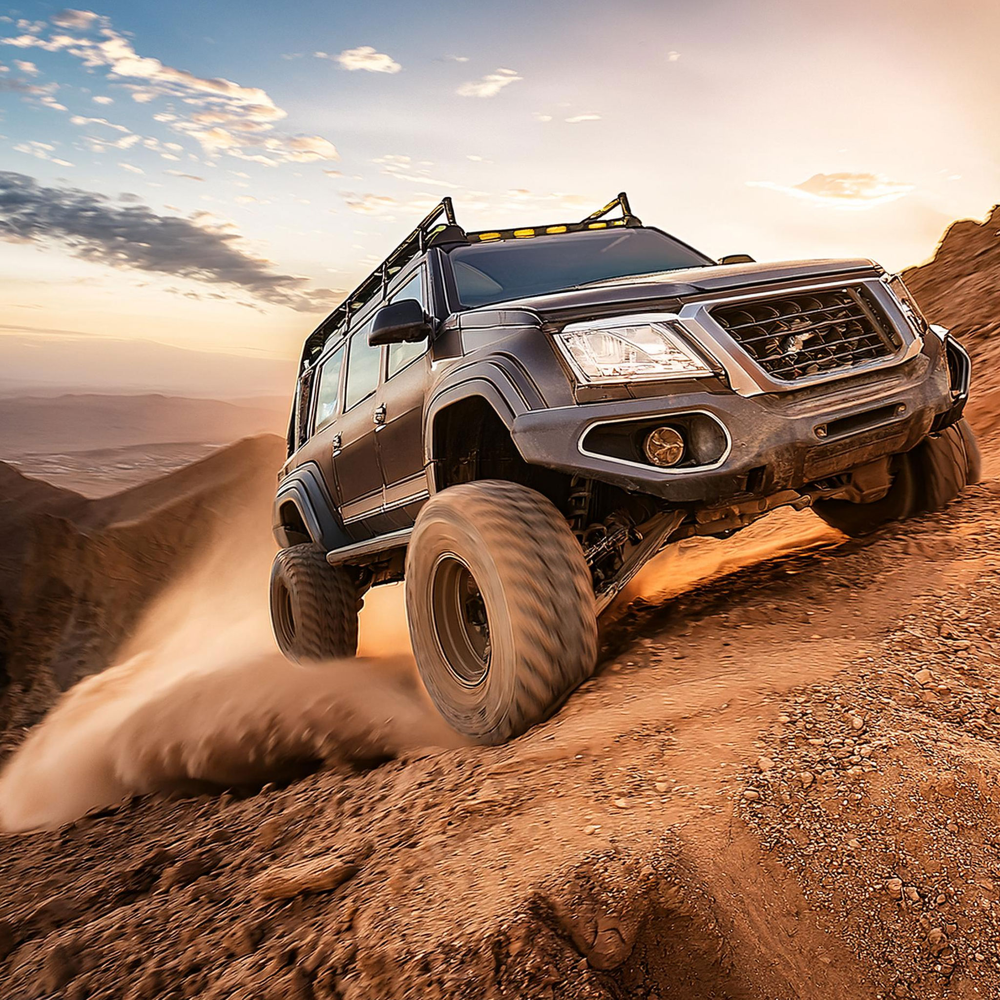
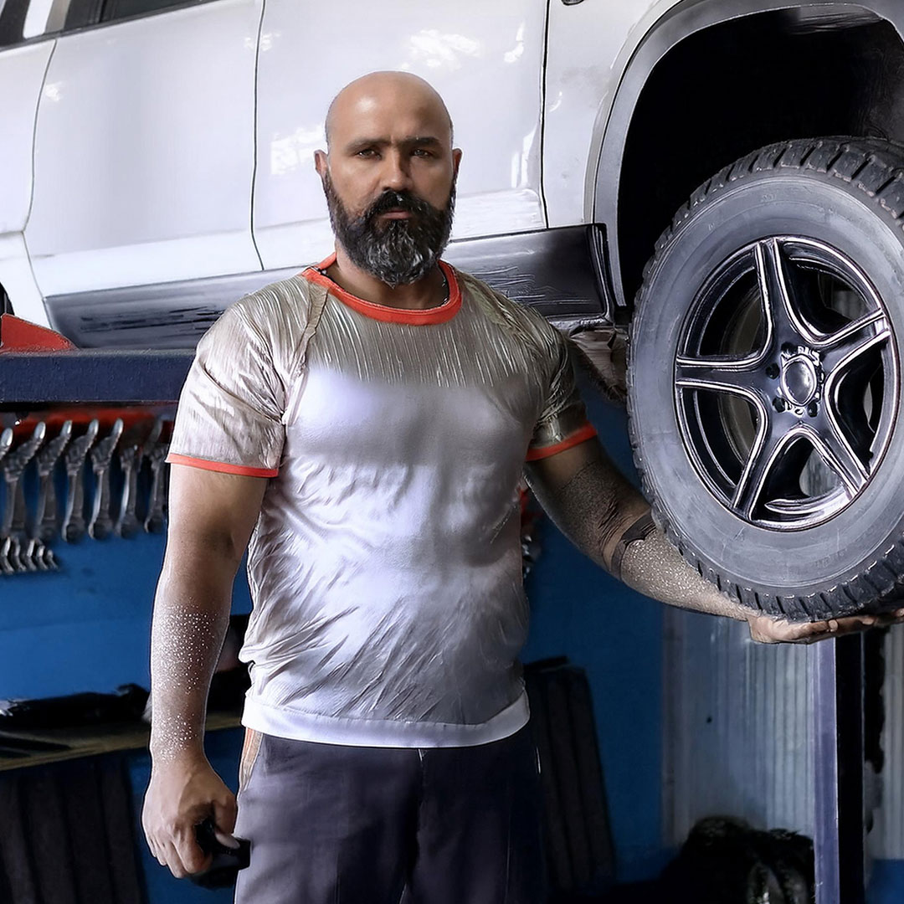
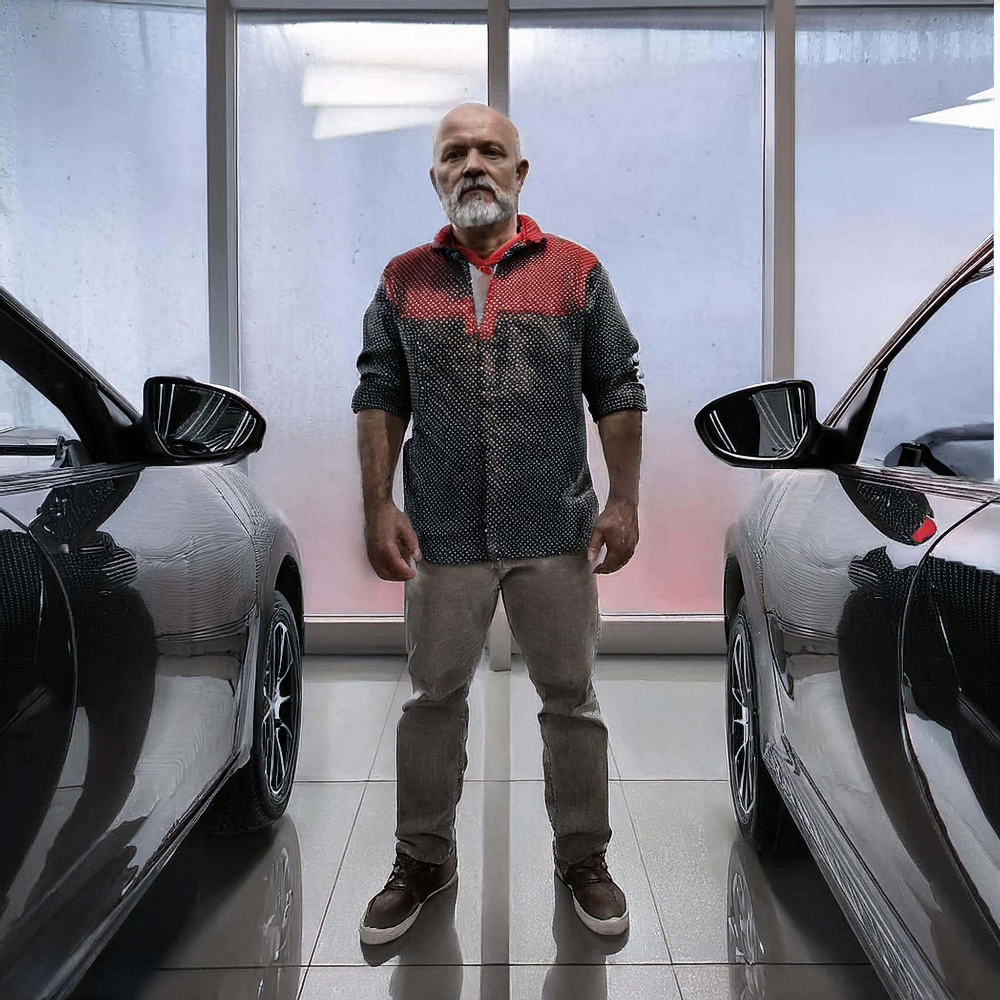
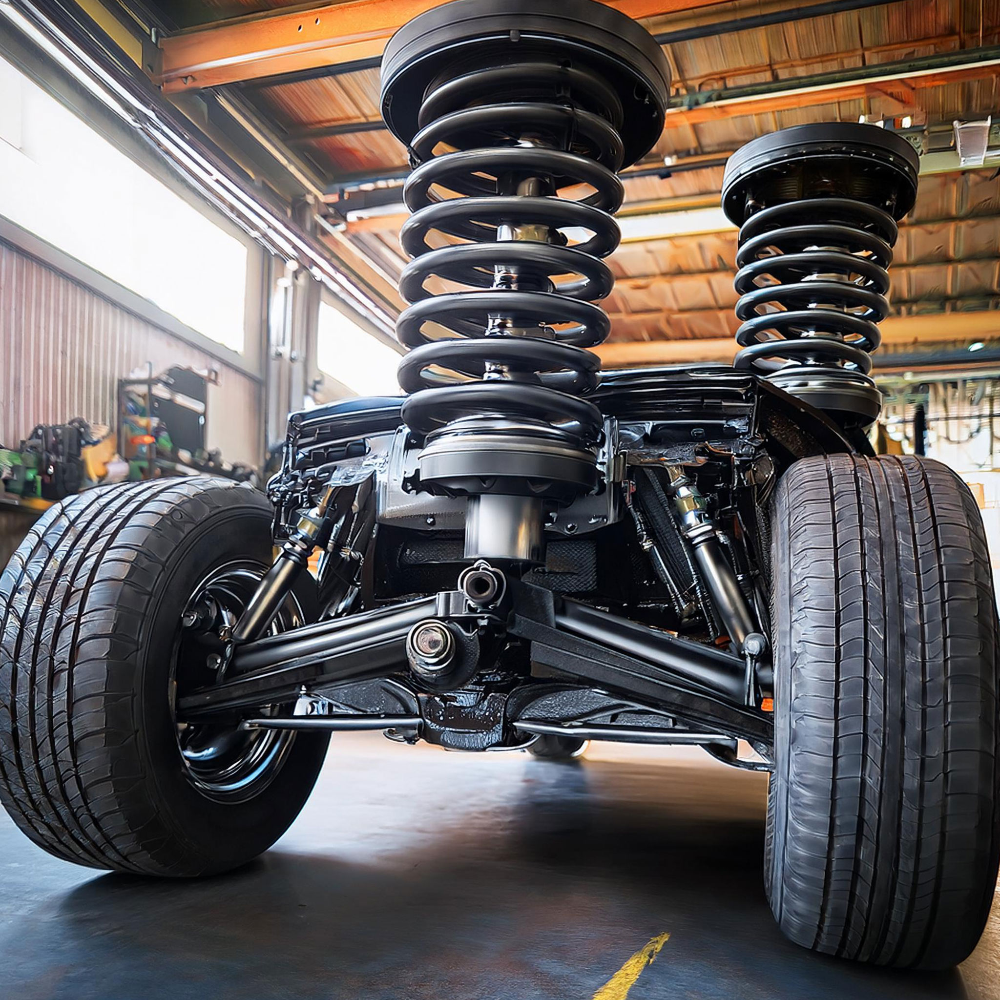
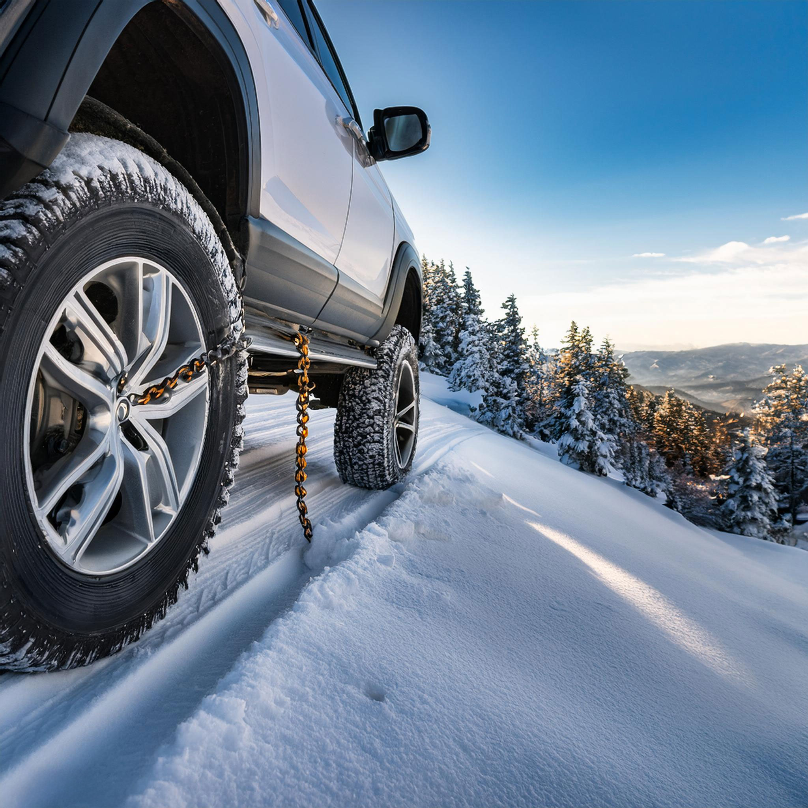

Explorando la Frontera de la Tecnología Automotriz con Vehículos 4x4
En la constante búsqueda de mejorar el rendimiento y la experiencia de conducción, la programación de la ECU se ha establecido como un pilar fundamental en la personalización vehicular. Ajustar la unidad de control del motor no solo optimiza el rendimiento del combustible y la eficiencia, sino que también mejora la respuesta del vehículo a condiciones de conducción extremas, lo cual es esencial en el off-road.
La innovación no se detiene en la programación; se extiende a todos los aspectos de la personalización y mejoras tecnológicas en vehículos 4x4. Desde sistemas avanzados de suspensión hasta mejoras en la transmisión y neumáticos especializados, cada componente puede ser afinado para enfrentar los terrenos más desafiantes.
Con un enfoque en la innovación automotriz, nuestra dedicación va más allá de simples ajustes. Se trata de redefinir lo que un vehículo 4x4 puede hacer, transformándolo en una máquina que no solo enfrenta, sino que domina el terreno. Esto es posible gracias a una mezcla de experiencia técnica, pasión por el off-road, y un profundo conocimiento de la tecnología automotriz.
Cada vehículo que sale de nuestro taller lleva consigo años de antecedentes en ingeniería y personalización, asegurando que cada modificación no solo sea efectiva sino también segura. Al fin y al cabo, el verdadero potencial de un vehículo 4x4 reside en su capacidad para llevarlo todo al límite, mientras se mantiene intacto y listo para la próxima aventura.
Para más información sobre cómo podemos transformar tu experiencia 4x4, contáctanos hoy mismo.
 








